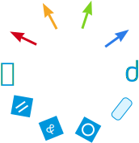

<div id="pie">
<svg xmlns="https://www.w3.org/2000/svg" xmlns:xlink="https://www.w3.org/1999/xlink" viewBox="0 0 200 200" id="menu" style="touch-action: none; -webkit-user-select: none;" width="200" height="200">
<style>
#menu {
    display: block;
    margin: 0 auto;
}
 
a {
    cursor: pointer; 
    outline: none;
}
 
/* You can change these default styles any way you want */
 
.item .sector {
    transition: all .1s linear;
    fill: #ddd;
}
 
.item:hover .sector, .item:focus .sector {
    fill: #eee;
}
 
.menu-trigger {
    fill: #EA2A55;
    pointer-events: auto; 
}
 
.menu-trigger:hover, .menu-trigger:focus { cursor: pointer; }
symbol { overflow: visible; }
</style>
<g id="itemsContainer">
	<a class="item" role="link" target="_parent" id="item-1" xlink:href="" ><path fill="none" class="sector" d="m100.89 0.14255c20.308 0 40.096 6.4951 56.519 18.544l-42.394 58.903c-4.1058-3.0097-9.0481-4.6311-14.125-4.6311v-72.816z"></path><use xlink:href="#icon-1" width="40" height="40" x="391.6795959472656" y="177.4671173095703"></use></a>
	<a class="item" role="link" target="_parent" id="item-2" xlink:href="" ><path fill="none" class="sector" d="m158.85 19.744c16.423 12.049 28.654 29.049 34.933 48.544l-68.587 22.495c-1.5673-4.8738-4.6346-9.1262-8.7404-12.136l42.394-58.903z"></path><use xlink:href="#icon-2" width="40" height="40" x="391.6795959472656" y="177.4671173095703"></use></a>
	<a class="item" role="link" target="_parent" id="item-3" xlink:href="" ><path fill="none" class="sector" d="m194.34 70c6.2788 19.495 6.2788 40.505 0 60l-68.587-22.495c1.5673-4.8738 1.5673-10.136 0-15.01l68.587-22.495z"></path><use xlink:href="#icon-3" width="40" height="40" x="391.6795959472656" y="177.4671173095703"></use></a>
	<a class="item" role="link" target="_parent" id="item-4" xlink:href="" ><path fill="none" class="sector" d="m193.79 131.71c-6.2788 19.495-18.51 36.495-34.933 48.544l-42.394-58.903c4.1058-3.0097 7.1731-7.2621 8.7404-12.136l68.587 22.495z"></path><use xlink:href="#icon-4" width="40" height="40" x="391.6795959472656" y="177.4671173095703"></use></a>
	<a class="item" role="link" target="_parent" id="item-5" xlink:href="" ><path fill="none" class="sector" d="m157.41 181.31c-16.423 12.049-36.212 18.544-56.519 18.544v-72.816c5.0769 0 10.019-1.6214 14.125-4.6311l42.394 58.903z"></path><use xlink:href="#icon-5" width="40" height="40" x="391.6795959472656" y="177.4671173095703"></use></a>
	<a class="item" role="link" target="_parent" id="item-5" xlink:href="" ><path fill="none" class="sector" d="m99.109 199.86c-20.308 0-40.096-6.4951-56.519-18.544l42.394-58.903c4.1058 3.0097 9.0481 4.6311 14.125 4.6311v72.816z"></path><use xlink:href="#icon-5" width="40" height="40" x="391.6795959472656" y="177.4671173095703"></use></a>
	<a class="item" role="link" target="_parent" id="item-5" xlink:href="" ><path fill="none" class="sector" d="m41.147 180.26c-16.423-12.049-28.654-29.049-34.933-48.544l68.587-22.495c1.5673 4.8738 4.6346 9.1262 8.7404 12.136l-42.394 58.903z"></path><use xlink:href="#icon-5" width="40" height="40" x="391.6795959472656" y="177.4671173095703"></use></a>
	<a class="item" role="link" target="_parent" id="item-5" xlink:href="" ><path fill="none" class="sector" d="m5.6635 130c-6.2788-19.495-6.2788-40.505 0-60l68.587 22.495c-1.5673 4.8738-1.5673 10.136 0 15.01l-68.587 22.495z"></path><use xlink:href="#icon-5" width="40" height="40" x="391.6795959472656" y="177.4671173095703"></use></a>
	<a class="item" role="link" target="_parent" id="item-5" xlink:href="" ><path fill="none" class="sector" d="m6.2144 68.288c6.2788-19.495 18.51-36.495 34.933-48.544l42.394 58.903c-4.1058 3.0097-7.1731 7.2621-8.7404 12.136l-68.587-22.495z"></path><use xlink:href="#icon-5" width="40" height="40" x="391.6795959472656" y="177.4671173095703"></use></a>
	<a class="item" role="link" target="_parent" id="item-5" xlink:href="" ><path fill="none" class="sector" d="m42.589 18.686c16.423-12.049 36.212-18.544 56.519-18.544v72.816c-5.0769 0-10.019 1.6214-14.125 4.6311l-42.394-58.903z"></path><use xlink:href="#icon-5" width="40" height="40" x="391.6795959472656" y="177.4671173095703"></use></a>
</g>
<g id="trigger" class="trigger menu-trigger" role="button">
	<circle cx="100" cy="100" r="22"></circle>
	<polygon id="close" fill="#fff" transform='translate(94 94)' points="12.8046875 1.2890625 7.69140625 6.40234375 12.8046875 11.515625 11.515625 12.8046875 6.40234375 7.69140625 1.2890625 12.8046875 0 11.515625 5.11328125 6.40234375 0 1.2890625 1.2890625 0 6.40234375 5.11328125 11.515625 0"></polygon>
</g>
</svg>


</div>
